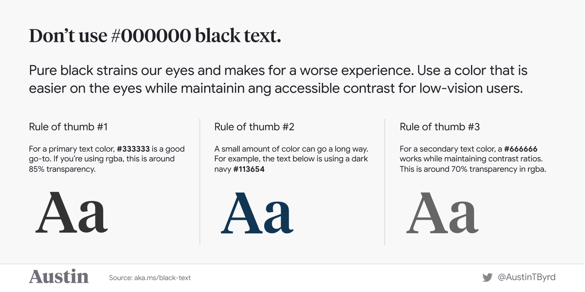

Half of your job, regardless of what that job is, is being able to sell your work. (source)
At GRID Inc., my colleague and I were tasked to develop deep learning-based models to address client use cases as part of an internship programme. As a junior data scientist with practically no experience in deep learning, being tasked to develop deep learning systems was a daunting challenge.
But the biggest challenge of all wasn’t technical.
That’s not to say there weren’t difficult technical challenges to transitioning from delivering classes to a deep learning engineering role. Having to shift to working with Python and image data from my usual work processing numeric data in R was a steep learning curve, not to mention learning to organize a data science project in Python.
Relevance
The biggest challenge was to answer the question: how does this help the client?
You could have built a state-of-the-art model using the latest deep learning algorithms, with promising out-of-sample errors derived from a well-designed data partitioning strategy. But if the client isn’t convinced that it’s useful, you’re not going to get recurring business. The client may not understand the technical merits of your project: you’re going to have to convince them that it is technically sound without getting too absorbed in the details.
Moreover, even if you’re sharing to your own data science team, some members of your team may not be familiar with the domain you’re working in, and you’re going to have to make similar adjustments to your presentation/reporting to make sure it’s accessible to your audience.
Granted, our roles weren’t client-facing, but we were challenged to make the systems relevant to the client all the same. One way to do this is to develop or pick metrics that are relevant to the use case, to make sure the client can relate to what you’re talking about.
As an example, in the context of regression problems, I strongly prefer using metrics that summarize the distribution of errors, e.g. root mean squared error (RMSE) rather than R-squared. Putting aside the many other downsides of the R-squared, its biggest drawback to me is its rather nuanced and commonly misunderstood definition. Reporting a metric like RMSE or MAPE (mean average percentage error) that’s in the same units as the outcome of interest is more straightforward and makes the metric more meaningful for the client.
Less is more
If you’re going to get your message across, there’s always going to be stuff you have to leave in the file drawer.
With my project, I had multiple performance metrics on hand. I was reluctant to leave the irrelevant ones out from the report, because I put in a lot of effort into developing the metric. However, I was met with confusion when I presented them all to my colleagues, and in hindsight I should have just left it out. (So much for having an understanding of sunk costs …)
In addition, you can’t go over every detail of your modelling work.
On the one hand, deep learning architectures are indeed complex. On the other hand, the architectures we know about are known to work out for a number of use cases. Going over details of the architectures used is generally just unnecessary, although highlighting key differences between architectures that make a difference to your model’s performance can help your audience to understand your thought process.
For instance, in deep learning-based object detection, there is a speed-accuracy trade-off between region proposal network and regression-based architectures. This can be explained as a consideration in selecting the algorithm without going over implementation details.
tl;dr Give just enough detail: not more than necessary, but no less than necessary either.
Communication is key
I think data science people don’t talk enough about how important communication is. Which is why reading Vicki Boykis’ excellent blog post on selling data science this morning (from which I got the quote above!) was so striking for me.
We certainly have some idea that communication is important. Data science wouldn’t have been as popular as it is now, if not for the proliferation of resources, whether it be blog posts, documentation, Twitter, GitHub repositories and the like.
When presenting modelling work, it’s tempting to go all death by PowerPoint and overwhelm your audience with all the information you have. But that’s not going to convince them that your model can drive business value.
I think data scientists have a lot to learn from the data visualization community, since our job involves communicating about data. For instance, being mindful of the visual hierarchy in your diagrams (example below) can help make your message a lot more impactful.

Conclusions
Now, that is not to say that programming and statistics skills aren’t important. I came out of this wishing I had better programming skills, and there’s no shortage of statistics and modelling techniques to be learned.
The good news: data science has democratized prediction with the free availability and active development of open-source tools, cheaper hardware and a vibrant online community. But we need to pay attention to how we communicate the business relevance of our work, because the glamour of opaque buzzwords and playing the benchmarks game can only take us so far.